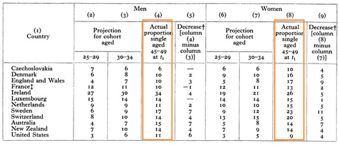
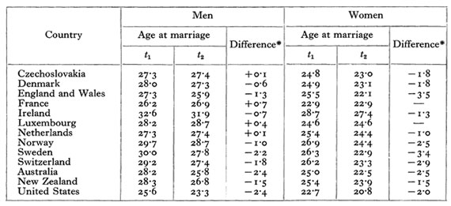
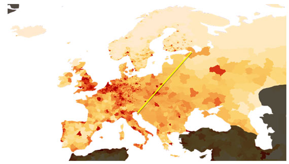
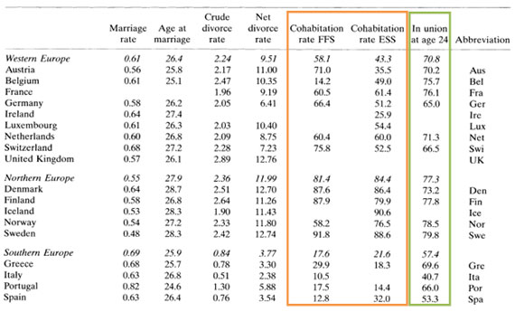
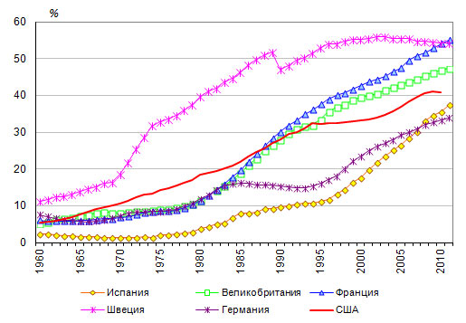

Трансформация брачно-партнерских отношений в развитых странах
Введение
Ценность семьи как основы социальной стабильности общества люди осознавали во все времена. И на протяжении всей истории человечества можно было слышать обеспокоенные высказывания о разрушении семейных ценностей и деградации института семьи. Однако своего предела распространенность подобных взглядов стала достигать вместе с триумфальным шествием по Европе демографического перехода, а точнее, на заключительных его стадиях. Консервативная часть общества просто отказывается принять за норму изменение форм семейной жизни.
В действительности же характер формирования брачно-партнерских союзов отвечает демографическим тенденциям общества. В постпереходном обществе, где перед людьми не стоит задача обеспечения сверхвысокой рождаемости для простого воспроизводства, вполне логично, человек получил большую свободу в выборе своего жизненного пути. Традиционная мораль, которая служила цели обеспечения высокой рождаемости исключительно внутри брачных союзов, отпадает – ее цель более не актуальна, не отвечает вызовам времени. Свобода, которую получил индивид, есть колоссальное качественное преобразование жизни, достижение демографического перехода. Этот феномен лег в основу концепции второго демографического перехода (Puur et al., 2012).
В данной работе мы постараемся рассмотреть, как менялись брачно-партнерские отношения в развитых странах. Сразу оговоримся, что под развитыми в данном контексте понимаются страны, ранее других начавшие и завершившие демографический переход. Это преимущественно европейские страны. К ним можно добавить «страны с глубокими европейскими корнями», по выражению Дэвида Реера (Reher, 2011).
Феномен европейской брачности
В допереходной Европе брак был основным регулятором рождаемости. Под жестким контролем общественной и религиозной морали создание семьи, по сути, было единственным способом получения права на воспроизводство. Исследования демографов показывают, что уровень рождаемости до демографического перехода в европейских странах был существенно ниже, чем во многих развивающихся странах на соответствующем историческом этапе.
Исторический тип брачности в Европе значительно отличался от прочих регионов мира. Главная регулирующая функция института брака заключалась в том, что не каждый мог позволить себе роскошь жениться и воспроизводить на свет потомство. Майорат – принцип полного наследования старшим сыном – устанавливал естественное ограничение на возраст, а порой и на саму возможность, вступления в брак для младших сыновей. При отсутствии наследства для вступления в брак необходимо было сперва сколотить приличное состояние, на что уходили наиболее продуктивные молодые годы. Таким образом, рождаемость регулировалась не внутри семьи, а на этапе формирования семей. Ограничение рождаемости происходило за счет сокращения продолжительности детородного периода в браке и численности женщин, подверженных риску беременности. Итоговая доля безбрачия (более 10% для европейского типа) также вносила свой вклад в снижение темпов прироста численности населения. Известный исследователь Джон Хаджнал, впервые описавший европейский тип брачности (Hajnal, 1953), приводит расчеты окончательного безбрачия в европейских странах.
Таблица 1. Доля окончательного безбрачия в некоторых развитых странах. Оранжевой рамкой выделены реальные данные за 1930-е годы.

Источник: Hajnal (1953).
Из приведенной выше таблицы видно, что доля окончательного безбрачия в западноевропейских странах до Второй Мировой войны (данные t1 Джон Хаджнал брал по доступным переписям 1930-х годов) была очень высокой: 10-15% для мужчин (4) и 15-20% для женщин (8).
Средний возраст вступления в брак в европейских странах был очень высоким даже по современным меркам. Так, до «золотого века брака» 1950-60-х годов средний возраст вступления в брак в европейских странах превышал 28 лет для мужчин и 25 лет для женщин.
Таблица 2. Средний возраст вступления в брак в некоторых развитых странах. t1 – 1930-е годы; t2 – 1940-е годы.

Источник: Hajnal (1953).

Рисунок 1. Карта плотности населения Европы (современная). Интенсивность цвета соответствует плотности населения. Желтым примерно нанесена линия Хаджнала.
Источник: http://commons.wikimedia.org/wiki/File:Population_density_Europe.png
Феномен позднего вступления в брак был характерен исключительно для Западной Европы. Хаджнал предложил провести границу между двумя принципиально разными типами формирования семей по линии Санкт-Петербург – Триест (Hajnal, 2017). К западу от этой гипотетической линии господствовал европейский тип брачности. Ключевым фактором формирования специфического типа наследования и брачности в Западной Европе, вероятно, была высокая плотность населения. Взгляд на карту плотности населения Европы (Рис. 1) подтверждает наше предположение. Если мысленно провести по ней линию Хаджнала, мы получим довольно четкое разделение Европы на густонаселенную часть и более разреженную. Стоит также отметить, что современная карта плотности населения Европы более равномерная. За счет того, что в наиболее развитых западных странах демографический переход начался раньше, дифференциация плотности населения была выше.
Именно ограниченность земельных ресурсов не позволяла дробить и без того небольшие земельные наделы и завещать все имущество по мужской линии одному наследнику, что и определяло формирование специфического типа брачности.
Демографический переход и рождаемость
Демографический переход привел человечество к более экономному типу воспроизводства. При резко снизившейся смертности (особенно в младенческих и детских возрастах) для простого воспроизводства от каждой женщины требуется меньшее количество рождений. По расчетам Рональда Ли, в результате демографического перехода женщины стали в среднем тратить на вынашивание и выращивание младенцев не 70% времени своей взрослой жизни, а лишь 14% (Lee, 2003).
Высвободившееся время дало возможность иначе распоряжаться своей судьбой. Этому способствовал и переход контроля рождаемости в зону личной ответственности семейной пары или – в переделе – только женщины.
Эмансипация женщин – возможно, ключевой результат социальной трансформации общества под воздействием демографического перехода (Lee and Mason, 2010) – пошатнула многовековые устои патриархальной Европы. Женщины, освобожденные от обязанности быть непрерывно занятыми воспроизводством, добились права самостоятельно определять свой жизненный путь: выбирать партнера, менять его при необходимости, решать, когда и сколько рожать. В результате, само количество широко распространенных и социально приемлемых способов прожить жизнь существенно возросло. Если до демографического перехода единственным способом достойно прожить жизнь было непременное вступление в брак, то в постпереходном обществе данное ограничение отпало. Причина кроется в том, что контроль рождаемости перешел с общественно-нормативного на внутрисемейный уровень. Этому, разумеется, способствовало и научно-техническое развитие – планирование семьи стало доступно всем семьям развитых стран.
В результате, в обществах, завершивших демографический переход, изучение классической брачности больше не дает полного представления о демографическом поведении населения. Продолжение изучения исключительно брачных союзов может приводить к ложным выводам, поскольку для многих развитых стран данная форма семейной жизни больше не является статистически значимой. Современные демографы стоят перед неуклонно усложняющейся задачей исследования всего многообразия сочетания форм матримониального, сексуального и репродуктивного поведения.
Свобода выбора жизненного пути
Активное замещение традиционного брака сожительством происходило уже на завершающих стадиях демографического перехода. Ключевым процессом, оформившим этот «брачный переход» стала сексуальная революция.
Традиционное воспроизводство населения подразумевало неизбежную связку матримониального, сексуального и репродуктивного поведения. Сперва брак, потом секс, потом рождение детей. Все отклонения караются неодобрением со стороны общественности.
Высвобождение времени «для жизни» в результате демографического перехода пошатнуло эти вековые устои.
Сексуальное поведение людей первым вышло из-под контроля общественности. Вероятно, объяснить этот феномен можно тем, что сексуальное поведение, как правило, затрагивает лишь двоих индивидов. Кардинально противопоставляя себя традиционным ценностям, проще все равно минимально «натыкаться» на непонимание и неодобрение общественности. Существенно большая критическая масса должна накопиться в обществе, прежде чем сожительство станет социальной нормой наравне с браком. И еще большее развитие процесса требуется для признания равных прав за детьми, рожденными вне зарегистрированного брака. Таким образом, мы видим, что логичное развитие общества идет все же по пути наименьшего сопротивления общественному мнению.
Брачный переход
Окончательное и бесповоротное отступание формального брака как доминирующей формы семейной и репродуктивной жизни человечества отмечали многие исследователи (Thornton, 1988; Bumpass et al., 1991; Lesthaeghe, 1998; Reher, 2011).
Таблица 3. Брачность, разводимость и сожительство в Европе в 1990-2000 годах.

Источник: Kalmijn (2007).
Из приведенной таблицы видно, что сожительство на сегодняшний день представляет собой наиболее широко распространенную форму семейной жизни в Европе. Этот тренд максимально развился в странах с наиболее длительной историей демографической модернизации, максимально далеко продвинувшихся на пути демографического перехода и сопутствующих ему изменениях. Максимальные доли сожительства характерны для стран Северной Европы и наиболее развитых стран Западной Европы. Так, в странах Северной Европы доля незарегистрированных союзов составляет 85-92% всех союзов, во Франции, Германии, Нидерландах, Швейцарии – чуть меньше – 50-60%. Но это все равно уже статистическое большинство. И динамика «брачного перехода» дает нам основания полагать, что доля сожительств будет продолжать расти, окончательно вытесняя зарегистрированный брак.
Аналогичная ситуация наблюдается последние десятилетия и в развитых неевропейских странах. Так, по результатам панельных исследований доля сожительствующих в США уже к середине 1980-х годов достигала 40% от всех пар в возрастных группах до 25 лет. Общая же доля состоящих в союзе к возрасту 25 лет достигала 76% у женщин и 67% у мужчин (Bumpass and Sweet, 1989).
Вот еще один показательный момент «брачного перехода». Исследователи неизменно отмечали колоссальный рост среднего возраста вступления в брак. Но с определенного момента показатель среднего возраста вступления в зарегистрированный брак перестает быть значащим: мы не можем с достаточной уверенностью говорить, какого рода селекция заставляет остаточное количество пар официально регистрировать союз. Для всех союзов ситуация со средним возрастом вступления в отношения не столь однозначна. В целом, можно говорить о том, что для наиболее модернизированных стран характерно более раннее вступление в сожительство.

Рисунок 2. Доля детей, рожденных вне зарегистрированного брака
Источник: http://demoscope.ru/weekly/2013/0553/barom04.php
Таким образом, в развитых странах уже произошел переход на внутрисемейный уровень принятия решений в области регистрации союза. То есть матримониальное поведение вслед за сексуальным уже почти полностью освободилось от давления общественных устоев прошлого. Теперь пришла очередь репродуктивной эмансипации. И она уже верным темпом идет. А в некоторых наиболее развитых странах рождение детей вне зарегистрированного союза уже является статистической нормой (Рис. 2).
Так, во Франции и Швеции, исторических флагманах демографической модернизации, доля детей, рожденных вне брака, уже больше половины, Великобритания вплотную подобралась к этой рубежной отметке. И тренд устойчивый во всех странах. Даже некогда «отстающая» по данному показателю католическая Испания в последние годы ускоренными темпами «наверстывает упущенное».
Заключение
Исследование брачности и сожительства демонстрирует необратимый тренд перехода от традиционного брака к добровольным незарегистрированным союзам. Можно смело утверждать, что новой социальной формой семейной жизни становится сожительство.
Освобождение от предписаний традиционных норм морали происходило постепенно по пути наименьшего столкновения с общественным неприятием. Сперва житель развитой страны получил право распоряжаться своей сексуальной жизнью самостоятельно. Этот процесс назвали сексуальной революцией. Затем отпал «социальный диктат» в области матримониального поведения. Сожительство стало обычным делом. Последним оплотом традиционной морали падет (уже «падает», в наиболее развитых странах «упало») неприятие внебрачных рождений. Таким образом, на наш взгляд, вполне можно говорить о матримониальной и репродуктивной революциях.
Можно предположить, что брачный переход представляет собой часть всеобщей демографической модернизации. Следовательно, можно прогнозировать окончательное исчезновение формальной регистрации брака.